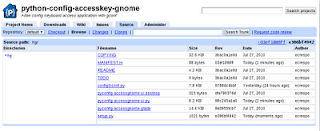

Este artículo explicará el proceso de creación de un tar.gz o tar.bz2 del programa de configuración de los accesos rápidos de teclado por medio de gconf con python. La siguiente imagen muestra el repositorio del proyecto en google code.

Como muestra la figura se tiene una serie de archivos en el repositorio, a continuación se explicará cada uno de ellos:
- COPYING: Contiene la Licencia del proyecto.
- MANIFEST.in: Es una plantilla que contiene la lista de archivos que se incluirán en el paquete del programa.
- README: Contiene información del programa, una descripción de uso y requerimientos.
- TODO: Lista de cosas por hacer para las siguientes versiones del programa.
- Archivos *.py: Son los programas desarrollados.
- pyconfig-accessgnome-ui.desktop: Archivo que define la información de la aplicación en el menú del escritorio.
- pyconfig-accessgnome.glade : Archivo xml glade que contiene la interfaz gráfica.
- setup.py: Archivo de configuración del proceso de instalación y creación de paquetes.
Para fines prácticos se explicará MANIFEST.in y setup.py.
MANIFEST.in es un archivo plantilla de entra que define que archivos se van a colocar en el archivo MANIFEST, este archivo final le dira a setup.py cuales serán los archivos que se incluirán en el paquete .tar.gz o .tar.bz2. El archivo tiene una directiva include donde se le dirá los archivos que se quieren incluir. Por ejemplo:
include COPYING pyconfig-accessgnome.glade pyconfig-accessgnome-ui.desktop README TODO
El archivo setup.py contiene lo siguiente:
!/usr/bin/env python
#importar setup de distutils
from distutils.core import setup
#Crear la variable data_files que contiene las rutas de donde se van a colocar los archivos.
data_files = [('share/applications',['pyconfig-accessgnome-ui.desktop']),
('share/python-config-accesskey-gnome',['COPYING','configGconf.py','pyconfig-accessgnome.glade','pyconfig-accessgnome-ui.py','README','TODO'])]
#se define el nombre del programa, la versión, una descripción corta, el autor y su correo,
#el url del proyecto, la licencia, los scripts principales del programa, los archivos de datos adicionales,
#La plataforma soportadas,los módulos que se requieren para el funcionamiento del programa.
#Y el módulo que se desarrollo y necesita el programa principal.
setup(name='python-gconf-keybinding',
version='0.4',
description='Allow config keyboard access application with gconf',
author='Ernesto Nadir Crespo Avila',
author_email='ecrespo@gmail.com',
url = 'http://code.google.com/p/python-config-accesskey-gnome/',
license = "GPL v3",
scripts = ['pyconfig-accessgnome-ui.py', 'configGconf.py'],
data_files =data_files,
platforms=['i386','AMD64'],
requires = ['gtk','gconf','pygtk','gtk.glade'],
py_modules = ['configGconf']
)
Al tener los archivos necesarios para instalar el programa y para crear los paquetes sólo queda ejecutar los comandos: Listar los archivos existentes:
ls -l
total 92
-rwxr-xr-x 1 ernesto ernesto 8036 ago 7 17:49 configGconf.py
-rw-r--r-- 1 ernesto ernesto 33353 jul 27 20:41 COPYING
-rw-r--r-- 1 ernesto ernesto 88 ago 8 18:15 MANIFEST.in
-rw-r--r-- 1 ernesto ernesto 14729 jul 27 20:45 pyconfig-accessgnome.glade
-rwxr-xr-x 1 ernesto ernesto 315 jul 27 20:41 pyconfig-accessgnome-ui.desktop
-rwxr-xr-x 1 ernesto ernesto 8420 ago 8 17:06 pyconfig-accessgnome-ui.py
-rw-r--r-- 1 ernesto ernesto 4260 jul 27 20:41 README
-rwxr-xr-x 1 ernesto ernesto 1021 ago 8 18:12 setup.py
-rw-r--r-- 1 ernesto ernesto 0 jul 27 20:41 TODO
Probar la instalación del programa: Se ejecuta el install para el setup.
sudo python setup.py install
running install
running build
running build_py
creating build
creating build/lib.linux-i686-2.6
copying configGconf.py -> build/lib.linux-i686-2.6
running build_scripts
creating build/scripts-2.6
copying and adjusting pyconfig-accessgnome-ui.py -> build/scripts-2.6
copying and adjusting configGconf.py -> build/scripts-2.6
changing mode of build/scripts-2.6/pyconfig-accessgnome-ui.py from 644 to 755
changing mode of build/scripts-2.6/configGconf.py from 644 to 755
running install_lib
running install_scripts
copying build/scripts-2.6/pyconfig-accessgnome-ui.py -> /usr/local/bin
copying build/scripts-2.6/configGconf.py -> /usr/local/bin
changing mode of /usr/local/bin/pyconfig-accessgnome-ui.py to 755
changing mode of /usr/local/bin/configGconf.py to 755
running install_data
running install_egg_info
Removing /usr/local/lib/python2.6/dist-packages/python_gconf_keybinding-0.4.egg-info
Writing /usr/local/lib/python2.6/dist-packages/python_gconf_keybinding-0.4.egg-info
Esto crea un directorio build que contiene los scripts y la librerías, luego los copia en /usr/local/ tanto en bin como en share.
ls share/python-config-accesskey-gnome/
configGconf.py COPYING pyconfig-accessgnome.glade pyconfig-accessgnome-ui.py README TODO
ls bin/
configGconf.py pyconfig-accessgnome-ui.py pyloro.py
Ya en este momento se puede ejecutar el programa tanto de forma gráfica como desde la línea de comandos.
A continuación viene el proceso de construcción del tar.gz y tar.bz: El comando para el setup.py es sdist el cual crea el paquete para ser distribuído, adicionalmente se le pasa el formato con la opción --formats=bztar, gztar. Los argumentos bztar y gztar es para crear un tar.bz2 y un tar.gz respectivamente.
El comando es el siguiente:
python setup.py sdist --formats=bztar,gztar
running sdist
reading manifest template 'MANIFEST.in'
writing manifest file 'MANIFEST'
creating python-gconf-keybinding-0.4
making hard links in python-gconf-keybinding-0.4...
hard linking COPYING -> python-gconf-keybinding-0.4
hard linking README -> python-gconf-keybinding-0.4
hard linking TODO -> python-gconf-keybinding-0.4
hard linking configGconf.py -> python-gconf-keybinding-0.4
hard linking pyconfig-accessgnome-ui.desktop -> python-gconf-keybinding-0.4
hard linking pyconfig-accessgnome-ui.py -> python-gconf-keybinding-0.4
hard linking pyconfig-accessgnome.glade -> python-gconf-keybinding-0.4
hard linking setup.py -> python-gconf-keybinding-0.4
creating dist
tar -cf dist/python-gconf-keybinding-0.4.tar python-gconf-keybinding-0.4
bzip2 -f9 dist/python-gconf-keybinding-0.4.tar
tar -cf dist/python-gconf-keybinding-0.4.tar python-gconf-keybinding-0.4
gzip -f9 dist/python-gconf-keybinding-0.4.tar
removing 'python-gconf-keybinding-0.4' (and everything under it)
Ya se tiene un directorio dist con los 2 paquetes creados:
ls -l dist/
total 40
-rw-r--r-- 1 ernesto ernesto 16539 ago 8 19:12 python-gconf-keybinding-0.4.tar.bz2
-rw-r--r-- 1 ernesto ernesto 18331 ago 8 19:12 python-gconf-keybinding-0.4.tar.gz
El contenido de un paquete es el siguiente:
tar -tvzf dist/python-gconf-keybinding-0.4.tar.gz
drwxr-xr-x ernesto/ernesto 0 2010-08-08 19:12 python-gconf-keybinding-0.4/
-rwxr-xr-x ernesto/ernesto 8420 2010-08-08 17:06 python-gconf-keybinding-0.4/pyconfig-accessgnome-ui.py
-rw-r--r-- ernesto/ernesto 33353 2010-07-27 20:41 python-gconf-keybinding-0.4/COPYING
-rwxr-xr-x ernesto/ernesto 8036 2010-08-07 17:49 python-gconf-keybinding-0.4/configGconf.py
-rw-r--r-- ernesto/ernesto 0 2010-07-27 20:41 python-gconf-keybinding-0.4/TODO
-rwxr-xr-x ernesto/ernesto 315 2010-07-27 20:41 python-gconf-keybinding-0.4/pyconfig-accessgnome-ui.desktop
-rwxr-xr-x ernesto/ernesto 1021 2010-08-08 18:12 python-gconf-keybinding-0.4/setup.py
-rw-r--r-- ernesto/ernesto 14729 2010-07-27 20:45 python-gconf-keybinding-0.4/pyconfig-accessgnome.glade
-rw-r--r-- ernesto/ernesto 4260 2010-07-27 20:41 python-gconf-keybinding-0.4/README
-rw-r--r-- ernesto/ernesto 394 2010-08-08 19:12 python-gconf-keybinding-0.4/PKG-INFO
Sólo queda probar la instalación del paquete, primero se descomprime y luego se ejecuta el setup.py con la opción install:
tar -xvzf python-gconf-keybinding-0.4.tar.gz
python-gconf-keybinding-0.4/
python-gconf-keybinding-0.4/pyconfig-accessgnome-ui.py
python-gconf-keybinding-0.4/COPYING
python-gconf-keybinding-0.4/configGconf.py
python-gconf-keybinding-0.4/TODO
python-gconf-keybinding-0.4/pyconfig-accessgnome-ui.desktop
python-gconf-keybinding-0.4/setup.py
python-gconf-keybinding-0.4/pyconfig-accessgnome.glade
python-gconf-keybinding-0.4/README
python-gconf-keybinding-0.4/PKG-INFO
Se cambia al directorio python-gconf-keybinding-0.4.
cd python-gconf-keybinding-0.4/
Instalación del paquete:
sudo python setup.py install
running install
running build
running build_py
creating build
creating build/lib.linux-i686-2.6
copying configGconf.py -> build/lib.linux-i686-2.6
running build_scripts
creating build/scripts-2.6
copying and adjusting pyconfig-accessgnome-ui.py -> build/scripts-2.6
copying and adjusting configGconf.py -> build/scripts-2.6
changing mode of build/scripts-2.6/pyconfig-accessgnome-ui.py from 644 to 755
changing mode of build/scripts-2.6/configGconf.py from 644 to 755
running install_lib
running install_scripts
copying build/scripts-2.6/pyconfig-accessgnome-ui.py -> /usr/local/bin
copying build/scripts-2.6/configGconf.py -> /usr/local/bin
changing mode of /usr/local/bin/pyconfig-accessgnome-ui.py to 755
changing mode of /usr/local/bin/configGconf.py to 755
running install_data
running install_egg_info
Removing /usr/local/lib/python2.6/dist-packages/python_gconf_keybinding-0.4.egg-info
Writing /usr/local/lib/python2.6/dist-packages/python_gconf_keybinding-0.4.egg-info
Como ya se explico antes el programa se instala en /usr/local .
El próximo artículo explicará como crear un paquete Debian a partir del tar.gz.
Para más información pueden visitar los siguientes enlaces:
http://docs.python.org/distutils/
http://mundogeek.net/archivos/2008/09/23/distribuir-aplicaciones-python/
===
¡Haz tu donativo! Si te gustó el artículo puedes realizar un donativo con Bitcoin (BTC) usando la billetera digital de tu preferencia a la siguiente dirección: 17MtNybhdkA9GV3UNS6BTwPcuhjXoPrSzV
O Escaneando el código QR desde billetera:

Comments !